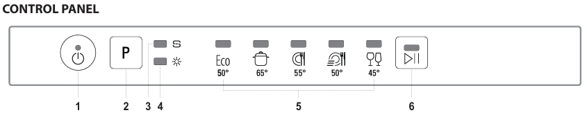
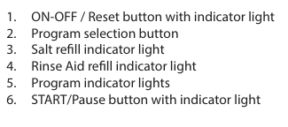
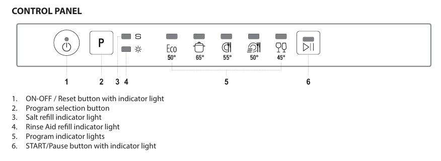
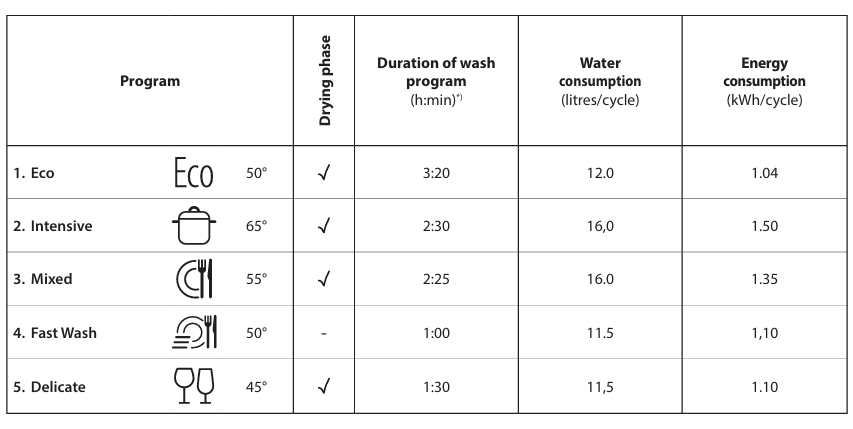

Dishwasher instructions
Product description
- Upper basket: for lightly soiled plates and delicate dishes such as glasses, cups, saucers, and shallow salad bowls.
- Lower basket: for pots, lids, plates, salad bowls, and large-sized dishes.
- Cutlery basket: for cutlery and small items.
- Dispensers: for detergent and rinse aid.



Daily use
- Power on: open the door and press the power on/off button.
- Loading the baskets: load the baskets with dishes as described above.
- Filling the detergent dispenser: add the detergent to the dispenser.
- Selecting the program: select the desired program by pressing the P button.
- Start: press the start/pause button and close the door within 4 seconds.
A beep sounds when the program starts.
Programs
- Eco: for moderately soiled dishes; the most efficient program in terms of combined water and energy consumption.
- Intensive: for heavily soiled dishes and pots (do not use for delicate items).
- Mixed: for normally soiled dishes with dried food residues.
- Quick wash: for a reduced load of normally soiled dishes,
achieving optimal washing results in a shorter time.
- Delicate: for delicate items more sensitive to high temperatures, such as glasses and cups.

End of the wash cycle
- End indication: the end of the cycle is indicated by a beep.
- Power off: open the door and turn off the appliance by pressing the power on/off button if still flashing.
- Unloading: wait a few minutes before removing the dishes to avoid burns, then unload the lower basket first and then the upper one.
Useful tips
- Energy saving: run the dishwasher only when fully loaded to optimize water and energy consumption.
- Adding dishes: if necessary, add dishes during the cycle by opening the door, pressing the start/pause button, and closing the door within 4 seconds.
- Changing the program: if you want to change the program, turn off the appliance and turn it back on, selecting the new cycle.
Troubleshooting
- Salt indicator On: the salt tank is empty. Refill it with dishwasher-specific salt.
- Rinse aid indicator On: the rinse aid container is empty. Refill it with dishwasher-specific rinse aid.
- Dishwasher won't start: check that the appliance is properly connected to the power supply and that the door is securely closed.
- Excessive noise: correctly arrange the dishes in the baskets and ensure they do not obstruct the spray arms.
- Unclean dishes: check the arrangement of the dishes, the detergent level, and ensure the filters are not clogged.
If you encounter problems, contact the host, Alessandro.